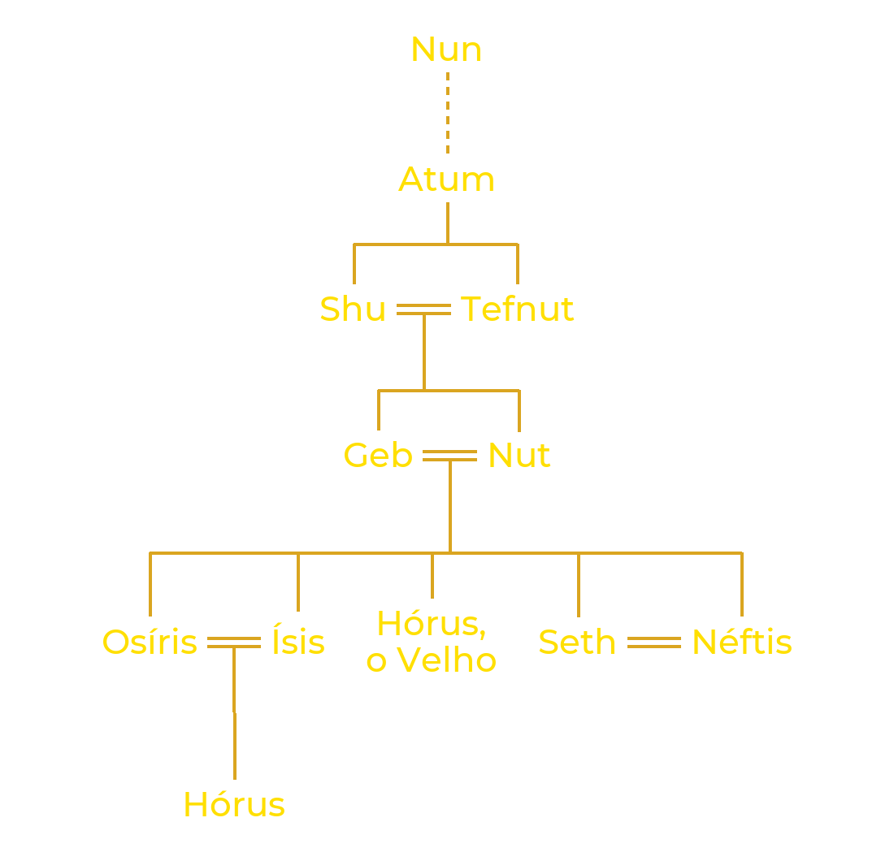

Heliópolis, a “cidade do sol” dos gregos, chamava-se Iunu em egípcio. Situada às portas do atual Cairo, foi desde o Império Antigo o grande centro do culto solar, e seus sacerdotes elaboraram o relato da criação mais difundido do Egito.
No princípio, havia apenas um oceano sem limites, inerte e mergulhado na escuridão: o Nun. Dessas águas surgiu Atum, cujo nome significa ao mesmo tempo “Aquele que é completo” e “Aquele que ainda não existe”: ele continha em si tudo o que viria a existir. Atum criou a si mesmo ao tomar consciência da própria existência. Fez então surgir das águas um monte de terra, o Benben, para poder se firmar sobre ele. Alguns textos contam que ele apareceu ali na forma do Benu, uma ave parecida com uma garça, que os gregos mais tarde associaram à fênix.
Sozinho, sem companheira, Atum tirou de si mesmo um primeiro casal divino. Conforme as versões, ele se uniu à própria mão, ou então cuspiu e espirrou: de seu espirro nasceu Shu, deus do ar e da luz, e de seu cuspe, Tefnut, deusa da umidade. Irmãos, foram também marido e mulher, e formam o primeiro casal da Criação.
Com eles surgiu Maat, a ordem do mundo. Mais do que uma deusa, Maat é o princípio que mantém o universo de pé: a justiça, a verdade, o curso regular do sol e das estações. Ela se opõe à isfet, a desordem, que ameaça sem cessar levar o mundo de volta ao caos das origens.

Da união de Shu e Tefnut nasceram Geb, a terra, e Nut, o céu. Os dois estavam tão estreitamente abraçados que nada podia existir entre eles. Por ordem de Atum, Shu se colocou entre os filhos e ergueu Nut com os braços estendidos, enquanto Geb permanecia deitado no chão. Assim se abriu o espaço onde o ar circula, onde a luz brilha e onde a vida pode se desenvolver.
Arqueada sobre a terra, Nut só toca o esposo com a ponta das mãos e dos pés. O sol percorre seu corpo durante o dia; toda tarde ela o engole, e toda manhã o faz nascer de novo. O Nun, por sua vez, foi repelido para além dos limites deste mundo, que ele continua a cercar como uma ameaça silenciosa.

Os homens também devem sua existência ao demiurgo. Um relato conta que Shu e Tefnut, ainda crianças, haviam se perdido nas trevas do Nun. Atum enviou seu Olho à procura deles. Quando os viu voltar, chorou de alegria, e suas lágrimas deram origem aos primeiros seres humanos.
Os Textos dos Sarcófagos, textos funerários do Império Médio (por volta de 2000-1700 a.C.), fazem o criador dizer: “Os homens são as lágrimas do meu olho.” O relato se baseia num jogo de palavras: em egípcio, “lágrimas” se diz remyt e “homens”, remetch.
O calendário egípcio tinha doze meses de trinta dias, ou seja, 360 dias. Segundo uma lenda relatada por Plutarco, Rá, temendo ser destronado, havia proibido Nut de dar à luz em qualquer dia do ano. Toth, o deus da sabedoria, veio em seu socorro: jogou dados com a Lua e ganhou dela uma pequena parte de sua luz, o bastante para formar cinco dias suplementares, colocados fora do ano. Durante esses dias, Nut pôde finalmente trazer seus filhos ao mundo.
Esses cinco dias são chamados “epagômenos”, do grego epagomenai hēmerai, os “dias acrescentados”. Em cada um nasceu um deus: no primeiro, Osíris; no segundo, Hórus, o Velho (que não se deve confundir com Hórus, o filho de Ísis e Osíris); no terceiro, Seth; no quarto, Ísis; e no quinto, Néftis. Os egípcios consideravam esses dias perigosos, sobretudo o terceiro, o do nascimento de Seth.

Os teólogos de Heliópolis reuniram esses deuses num grupo de nove, a Enéade, que reúne as forças necessárias à existência de um mundo ordenado: o demiurgo Atum, seus filhos Shu e Tefnut, seus netos Geb e Nut, e depois os filhos destes, com exceção de Hórus, o Velho, ou seja, os dois casais formados por Osíris e Ísis, Seth e Néftis. Atum, muitas vezes confundido com Rá sob o nome de Rá-Atum, está à frente dessa família divina.
A Criação não fez o Nun desaparecer: apenas o fez recuar. Tudo o que não foi criado continua a existir em suas margens e ameaça a ordem estabelecida. A mais temível dessas forças é Apófis, uma serpente gigantesca nascida das águas primordiais. Toda tarde, quando o sol deixa o céu do dia, sua barca se embrenha por doze horas no mundo da noite, e Apófis tenta devorá-la. Assim como Atum, Apófis não foi criado: por isso não pode ser destruído, apenas repelido, noite após noite, para que o sol possa renascer ao amanhecer.